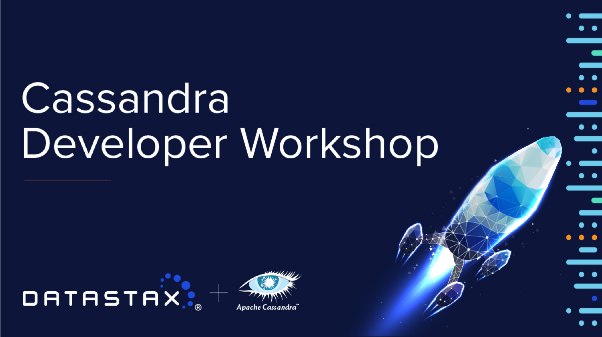

March 17th, 2020
.. not so far away...
The rise of Apache Cassandra™
In 2020, the database field is dominated by RDBMS, yet with volumes exploding we now need to scale out. 'Distributed Databases' and 'NoSQL' come to the rescue.
In 2008, 2 engineers at Facebook create what would become the core of the resistance and the flagship for NotOnly SQL: Apache Cassandra™
Founded in 2011, DataStax provides support for Cassandra, both through enterprise solutions and community activities to help the project grow.
Today, we need more Jedis to join the battle with us. Get ready for this journey and welcome to the Cassandra Developer Workshop, padawans...